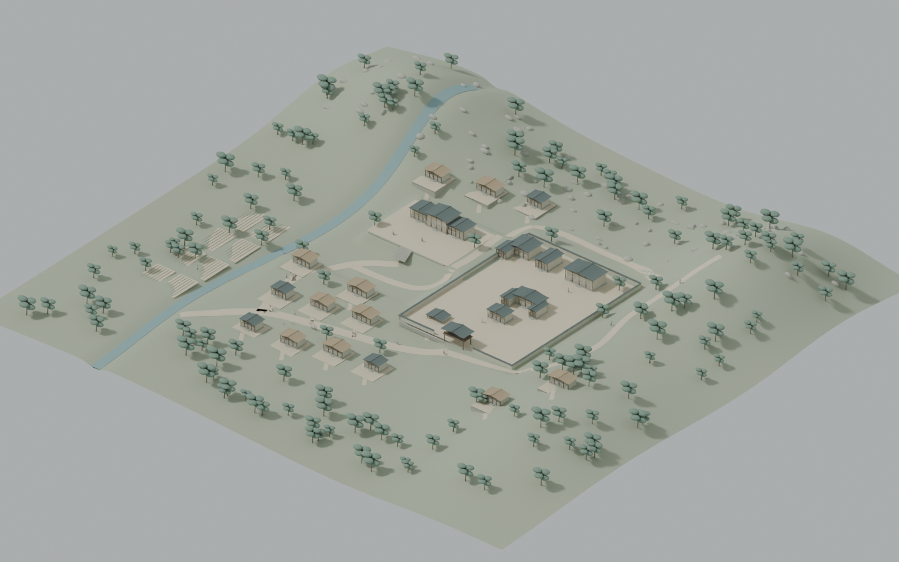
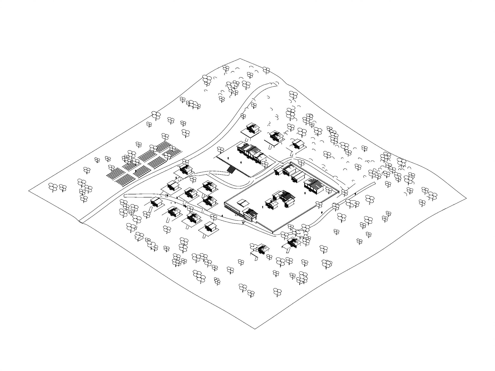

지형 위치 자료의 관아·객사 관계를 반영하고 주변 민가·하천·산림을 확장한 Blender 공간 검토본입니다. 지형 높이와 주변 세부 배치는 연출을 위한 해석이며, 실측 복원도는 아닙니다.

다섯 인물 동선과 마을 형성·소멸 엔딩을 12배속으로 묶은 검토 영상입니다. 웹에서는 스크롤로 진행합니다.
아래 도면은 이 버전의 웹에 연결된 마을 모델에서 직접 출력했습니다.
